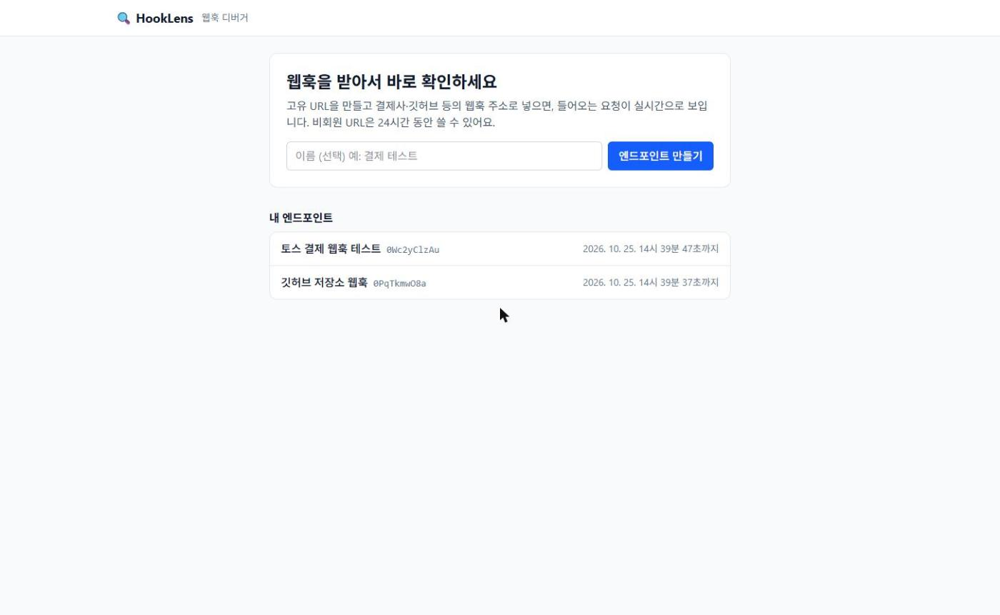

retry=1)의 헤더와 바디를 보고 있다.웹훅을 받아서 실시간으로 보여주고, 정해 둔 응답을 돌려주는 웹훅 디버거
결제(토스페이먼츠 등)나 깃허브 연동을 만들 때는 외부 서비스가 우리 서버로 보내는 웹훅을 받아서 처리하는 코드를 짜야 한다. 이때 반복해서 막히는 지점이 세 가지 있었다.
그래서 인터넷에서 접근 가능한 주소를 발급하고, 들어온 요청을 가공하지 않고 기록해 화면에 바로 띄우며, 응답 코드와 지연을 바꿔 실패 상황을 재현할 수 있는 도구를 만들었다. webhook.site, RequestBin과 같은 종류다.
2주 안에 MVP(P0 8개)를 완성하고 배포 구성까지 마치는 것을 목표로 잡았다. 회원·요청 제한·리플레이는 2차로 미뤘다.
| 요구사항 | 내용 |
|---|---|
| EP-001, EP-002 | 비회원 엔드포인트 발급, 24시간 후 만료(이후 수신 시 410) |
| HOOK-001, HOOK-002 | 모든 메서드·하위 경로 수신 및 원본 저장, 설정된 응답 반환(없으면 200 {"ok":true}) |
| LOG-001, 002, 003 | SSE 실시간 반영, 최신순 커서 목록, 상세(쿼리·헤더·바디) |
| RES-001 | 기본 응답 설정(상태 코드, 헤더, 바디, 지연 0~5초) |
retry=1)의 헤더와 바디를 보고 있다.

X-Anonymous-Token 헤더로 보낸다.endpoint, hook, log, response, global)로 나눴다.{ success, data, error: { code, message } }로 응답하고, 에러 코드는 ErrorCode enum 한 곳에서 관리한다. 웹훅 수신(/h/**)만은 사용자가 정한 응답을 그대로 돌려준다.2026-10-22T17:11:52+09:00).| 테이블 | 주요 컬럼 | 비고 |
|---|---|---|
| endpoint | slug(UK, 영숫자 10자), anonymous_token_hash(SHA-256), expires_at, member_id(NULL=비회원) | 외부에는 숫자 id 대신 slug만 노출 |
| request_log | method, path, query_string, headers(JSON), body(MEDIUMTEXT), ip, size_bytes, received_at | 인덱스 (endpoint_id, request_id DESC) |
| response_rule | is_default, status_code, response_headers(JSON), response_body, delay_ms | 1차는 엔드포인트당 기본 규칙 1개 |
엔드포인트가 지워지면 로그와 응답 규칙은 FK의 ON DELETE CASCADE로 함께 지워진다.
| 메서드 | 경로 | 설명 |
|---|---|---|
| POST | /api/endpoints | 발급. 익명 토큰은 이 응답에서만 제공 |
| ANY | /h/{slug}/** | 웹훅 수신. 없는 slug 404, 만료 410 |
| GET | /api/endpoints/{slug}/requests | 목록. cursor, size(1~100) |
| GET | /api/endpoints/{slug}/requests/{id} | 상세. 헤더는 JSON 객체로 변환 |
| GET | /api/endpoints/{slug}/stream | SSE. connected, request 이벤트, 30초 하트비트 |
| GET/PUT | /api/endpoints/{slug}/response | 응답 설정 조회 / 저장(upsert) |
X-Anonymous-Token 헤더로 인증하는데, 브라우저의 EventSource는 커스텀 헤더를 보낼 수 없다.fetch로 스트림을 열고 response.body.getReader()로 직접 읽는 훅을 만들었다. 네트워크 조각은 줄 단위로 오지 않으므로 버퍼에 모아 줄로 자르고(마지막 덜 온 조각은 다음 조각과 합침), 빈 줄에서 메시지 하나를 완성하고, :로 시작하는 하트비트는 버린다.RequestReceivedEvent만 발행하고, 리스너를 @TransactionalEventListener(phase = AFTER_COMMIT)로 두어 커밋이 성공했을 때만 전송한다. 이벤트에는 엔티티 대신 요약 DTO를 담았다 — 리스너는 트랜잭션 밖에서 돌기 때문에 LAZY 필드를 건드리면 예외가 난다.Thread.sleep / DeferredResult와 스케줄러로 비동기 완성 / 가상 스레드. 비동기는 스레드를 안 묶지만 흐름이 복잡해진다.spring.threads.virtual.enabled로 가상 스레드를 켰다. 코드는 단순한 sleep이지만 기다리는 동안 OS 스레드를 놓아준다.tomcat-handler-N인 것으로 가상 스레드 적용을 확인했다. 같은 이유로 open-in-view를 꺼 두어 30분짜리 SSE 연결도 커넥션을 잡지 않는다.WHERE endpoint_id = ? AND request_id < :cursor ORDER BY request_id DESC 커서 방식으로 하고, 같은 순서의 복합 인덱스를 두었다. 다음 페이지 여부는 COUNT 쿼리 대신 size + 1개를 조회해 판단하고, 첫 페이지는 cursor를 Long.MAX_VALUE로 둬서 메서드 하나로 처리했다. Spring Data의 Pageable은 OFFSET을 쓰므로 Limit을 썼다.equals 대신 MessageDigest.isEqual로 해서 응답 시간으로 일치 길이를 추측하는 타이밍 공격을 피했다./api/endpoints/{내 slug}/requests/{남의 id}를 요청하면 통과해 버린다. 상세 조회를 findByIdAndEndpointId로 바꿔 남의 요청은 조회 결과에 아예 나오지 않게 했고, 존재 여부를 숨기려고 403이 아닌 404를 준다. 존재하지 않는 id와 남의 id가 같은 응답이라는 것도 테스트로 고정했다.size=0, cursor=abc)는 500이 아닌 400이 되도록 예외 핸들러를 보강했다.\r\n이 있으면 X-A: x\r\nSet-Cookie: ...처럼 헤더를 끼워 넣을 수 있다(HTTP 응답 분할). 또 Content-Length를 실제와 다르게 넣으면 응답이 잘린다.application/x-www-form-urlencoded)의 PUT 웹훅을 받으면 바디가 비어서 저장됐다.FormContentFilter가 PUT·PATCH·DELETE 폼 바디를 먼저 읽어 파라미터로 바꿔 둔다. 바디 스트림은 한 번만 읽을 수 있어 컨트롤러에는 남은 게 없었다.@RequestBody나 getParameter() 없이 입력 스트림을 바이트로 직접 읽는다. 이 경우를 고정하는 테스트를 남겼다.HttpClient로 스트림에 연결한 상태에서 웹훅을 보내 event:request가 도착하는지 확인했다. 무한 대기를 막으려고 5초 제한을 걸었다.Clock 빈에서만 가져와서 "발급 24시간 뒤 만료"를 시간을 고정해 경계값(1초 전·정각·1초 후)으로 검증했다.| 테스트 클래스 | 확인 내용 |
|---|---|
| EndpointApiTest 외 3개 | 발급, slug 형식·중복 재시도, 토큰 해시, 만료 경계 |
| HookReceiveApiTest | 원본 저장, 폼 PUT 바디, 같은 이름 헤더, 404/410, 규칙 응답, 지연, 지연 중 로그 선저장 |
| RequestLogApiTest | 커서 페이징(중복 없음), 다른 엔드포인트 분리, IDOR 404, 401/403/400 |
| RequestStreamApiTest, E2ETest | 구독·인증, 실제 스트림 수신 |
| ResponseSettingsApiTest | upsert 멱등, 실제 웹훅 반영, 범위 검증, 헤더 주입 차단 |
EC2 한 대에 Nginx, 백엔드, MySQL을 Docker Compose 하나로 띄우는 구성을 만들고, 로컬에서 같은 구성을 그대로 실행해 검증했다. RDS 대신 컨테이너 MySQL로 시작한 것은 일정과 비용 때문이며, 접속 주소만 바꾸면 옮길 수 있다.
proxy_buffering off와 1시간 read timeout을 주고, /e/:slug에서 새로고침해도 404가 나지 않게 try_files ... /index.html을 둔다.ddl-auto: validate라 엔티티에서 생성한 DDL을 MySQL 첫 실행 때 넣는다. 백엔드는 MySQL healthcheck가 healthy가 된 뒤에 시작한다.X-Forwarded-For 전달과 server.forward-headers-strategy: native로 해결했다. 톰캣은 사설 대역에서 온 헤더만 믿어 외부 위조를 막는다.docs/deploy.md)는 준비돼 있다.기능마다 "무엇을 왜 이렇게 하는지"를 먼저 정리하고 코드를 쓰는 식으로 진행했다. 덕분에 커서 페이징, AFTER_COMMIT 리스너, IDOR처럼 처음엔 그냥 넘어갔을 부분을 직접 비교하고 고를 수 있었다.
가장 기억에 남는 건 설정 오타다. threads를 thread로, forward-headers-strategy를 forword로 쓴 적이 있는데, Spring은 모르는 키를 오류 없이 무시해서 앱은 잘 뜨고 기능만 조용히 빠진다. 그 뒤로는 설정을 바꾸면 실제 동작(스레드 이름, 저장된 IP)을 눈으로 확인하는 습관을 들였다. 같은 이유로 테스트도 "통과하는지"보다 "검사 코드를 지우면 실패하는지"를 확인하게 됐다.
아쉬운 점은 배포까지 마치지 못한 것이다. 일정 안에서 범위를 정할 때 프론트와 배포의 비중을 너무 작게 잡았다. 다음에는 배포 구성을 초반에 먼저 만들어 두고 기능을 올리는 순서로 하려고 한다.